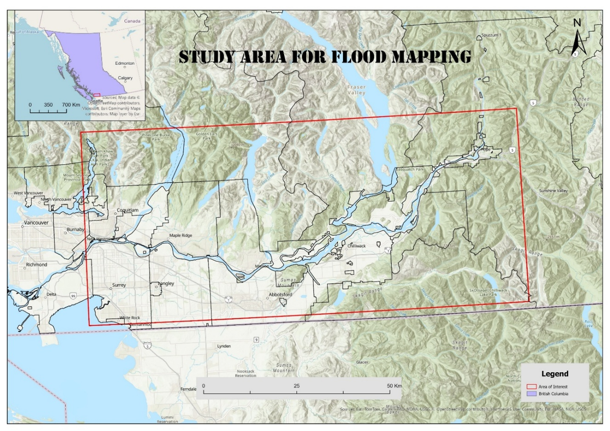
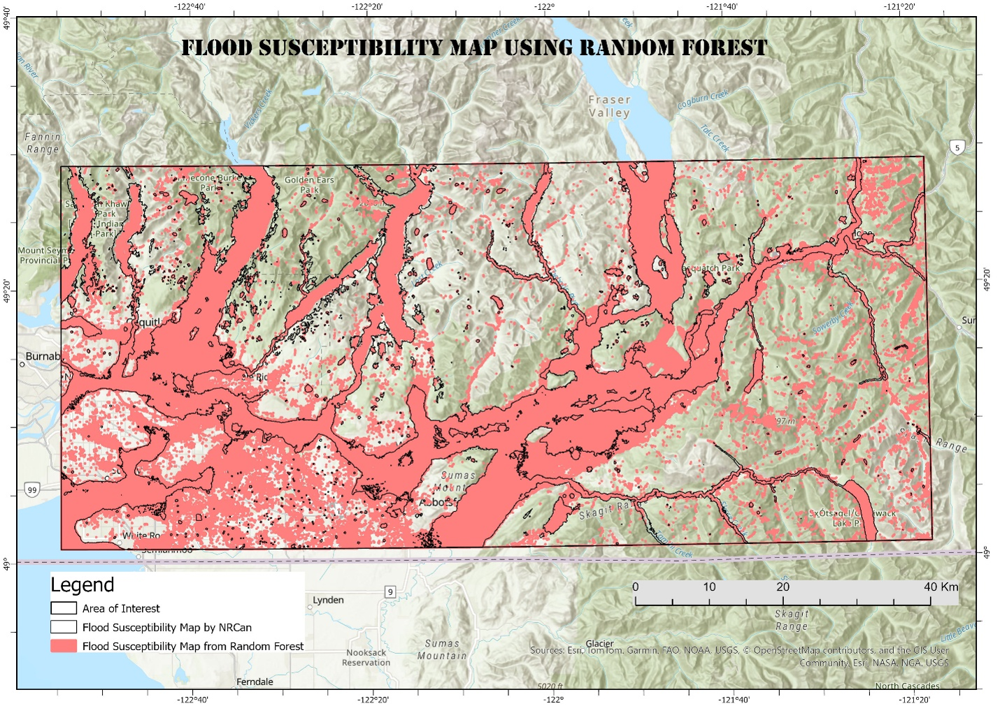

The short version
A flood susceptibility map shows where the land is more prone to flooding. It does not tell you when a flood will happen or how bad it will be. Using machine learning and several layers of geospatial data, I mapped flood susceptibility across the Lower Mainland, British Columbia. The map highlights some key findings such as, "low-lying areas along the Fraser River and its tributaries, including parts of Chilliwack, Abbotsford, Maple Ridge, etc., as the most flood-prone zones. For emergency planners, it is a quick, consistent way to see where to look more closely first.
Why this matters for planning
The November 2021 atmospheric river floods showed how quickly rain, rivers and low-lying land can combine to cut off roads, farms and communities across southern BC. When a storm is on the way, planners have to decide where to stage resources, which routes might close, and which neighbourhoods need early outreach. Those decisions are easier when you already know which areas are naturally more prone to flooding, before the first warning goes out.
One idea to keep 💡: "Susceptibility is not risk, and it is not a forecast"
These three terms are often mixed up, so here is a simple way to separate them:
- Susceptibility: Where is the land more prone to flooding? It depends on the landscape, such as terrain, soils and how close water bodies are.
- Risk: What could be lost if a flood happens? It adds people, buildings and infrastructure to the picture.
- A forecast: Will a flood happen soon, and how severe will it be? It depends on the weather and river conditions.
So, a susceptibility map is a starting point for planning, not a prediction. The study area for this project is shown in Figure 1.

Map Making Process
I built the map in five steps:
- Collected the datasets. I gathered data layers that influence flooding, such as elevation and slope, distance to rivers, soil, land cover, rainfall, and drainage density.
- Learned from past floods. I used records of where flooding has occurred in the past using historical flood extents from BC data Catalogue.
- Trained machine learning models. The models looked for the combinations of landscape features most often linked to flooding. I used Random Forest machine learning model for this project.
- Validated the results. I tested the model on test data. It provided separated flood-prone from less flood-prone areas.
- Classified: Using a 50% probability threshold, the data was divided into two classes: flood-prone and non-flood-prone.
What the map shows

Key findings:
- "The most flood-prone areas follow the Fraser River floodplain and low-lying delta lands."
- "The factors that mattered most were elevation, and distance to rivers."
- "About 40% of the study area falls in the high susceptibility class."
Limitations
It is important to be clear about limits:
- It shows relative susceptibility, not the depth, speed or timing of a flood.
- Its detail is limited by the resolution of the input data (30 metres), so it should not be read at the level of a single property.
- It reflects the data and flood records available, and it does not account for dikes, pumps or other flood protection.
- It complements, and does not replace, official floodplain maps and local flood studies.
Being upfront about these limits is what makes the map safe to use.
How planners could use it
- Screening: flag areas that deserve a closer look with detailed flood models or local knowledge.
- Outreach: prioritize where to share flood preparedness information early.
- Scenario planning: think through which routes, facilities and communities could be affected together.
- Communication: give decision-makers and the public a simple visual that explains why some areas need more attention.
What comes next
This map is part of my graduate research on flood susceptibility and flood forecasting in Lower Mainland, British Columbia. The next step is to connect susceptibility with probabilistic streamflow forecasts, so that "where" can be paired with "when." I would value feedback from people who plan for floods: what would make a map like this most useful in their work.
Contact: nepali@unbc.ca. Data and methods are not available right now.